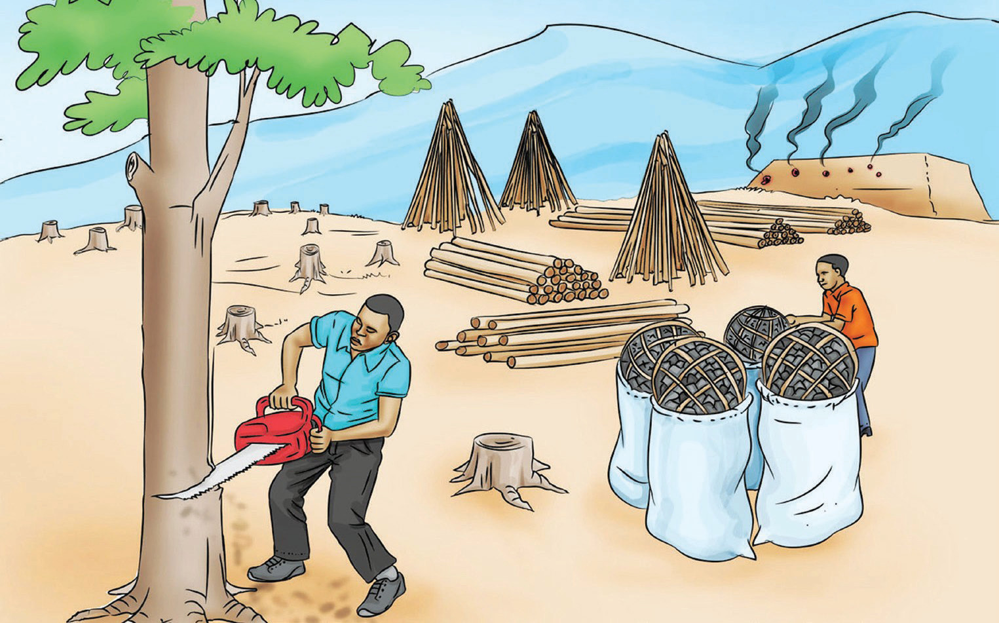

Did you
know
?

Questions
1. What is happening in this picture?
2. What is the importance of preserving Tanzania’s forests? Why?
3. What is your perspective on the claim that the demand for charcoal is a major cause of deforestation?
4. How does cutting down trees negatively affect Tanzania?
5. What are the fi ve measures to be taken to prevent Tanzania from losing its
forests? Use the cues provided following the ‘Did you know’ section to make
your arguments.
Expressing opinions is important for effective decision-making, as it allows individuals to contribute to positive outcomes. This skill is important in various settings, including home, school and work. It can signifi cantly impact family decisions, discussions in meetings and collaboration at work. Additionally, sharing opinions during public meetings and discussions with friends helps address community issues and personal matters. Phrases such as those listed in the following box are used by speakers to introduce their ideas and opinions.